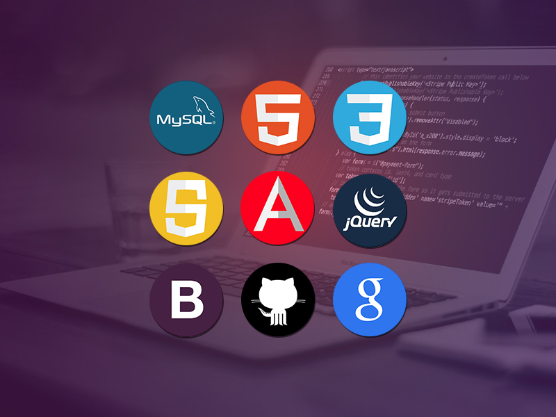

Image

Audio
]
Video

CSS stands for Cascading Style Sheets. It is a stylesheet language used to describe the presentation (look and formatting) of a web page written in HTML.
There are three types of CSS:
Inline CSS is used to style a single HTML element. and Used to style Attributes
Example
<h1 style="color: red";background-color: blue">Hello World!</h1>
Internal CSS is used to style a single HTML document.It Used to Single Webpage Create in Style Tag Used
Example
<style>h1{color: red;background-color: blue}</style>
External CSS is used to style multiple HTML documents.
Example
<link rel="stylesheet" href="style.css"></link>
Usage: Common in JavaScript, especially for variables and style properties in DOM.
Example: element.style.backgroundColor = "red";
Usage: Common in React component names, class-based objects.
Example :
function PrimaryButton()
{
return <button>Click Me </button>
}
Usage: Common in HTML attributes, class names, and other identifiers. Standard for CSS class names and IDs
Example:
.main-header {
background-color: yellow;
<h1 style="background-color: red">Hello World!</h1>
}
Usage: Popular in Python variables, database fields.
Example: